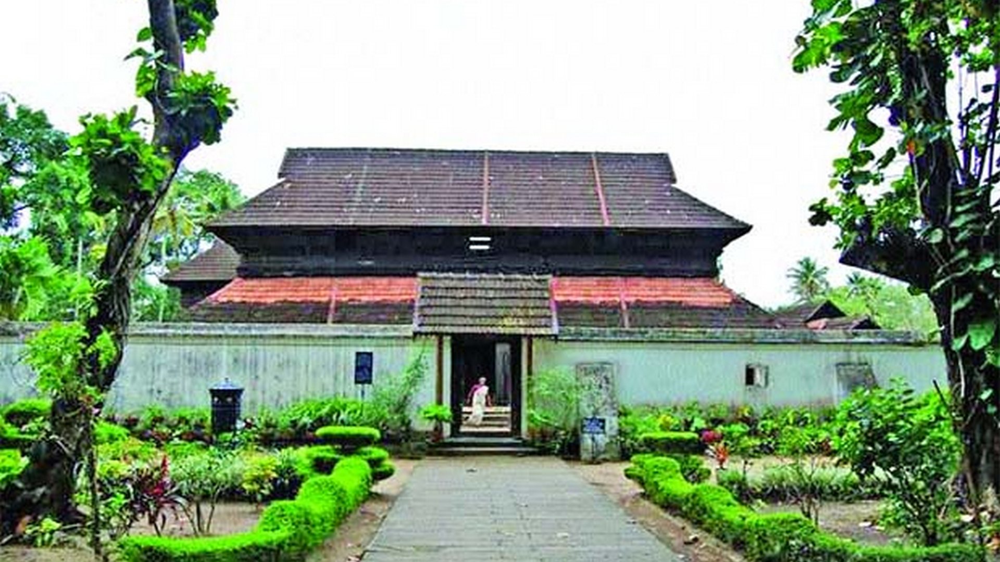
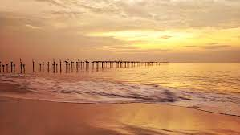
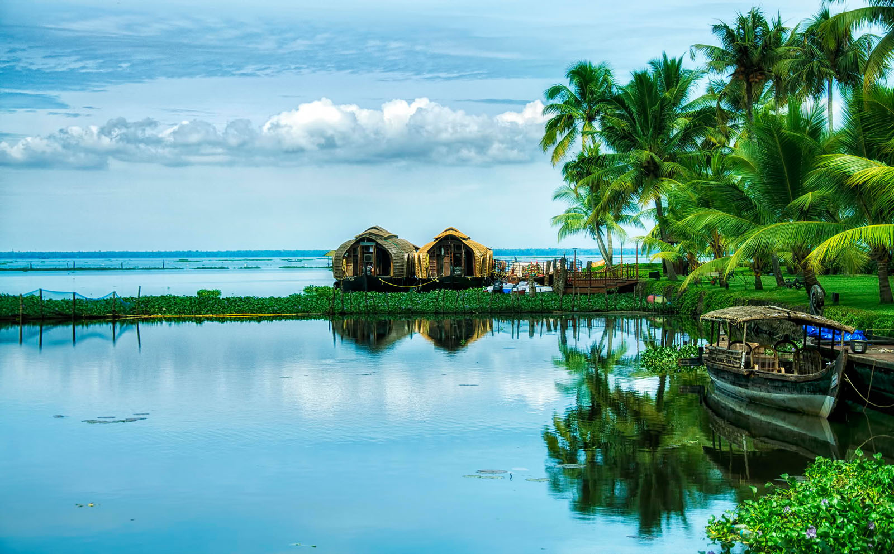
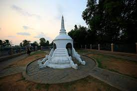

Pathiramanal

Krishnapuram Palace

Alappuzha Beach

Kumarakom

Alleppey, which is also called as Alappuzha, is a coastal district of Kerala. Alleppey become famous for many reasons like the beautiful combination of lakes, lagoons, crisscrossed narrow canals, rivers, coconut palms, paddy fields and many more.
Earlier Alleppey and near by areas are low laying wet lands. These wet lands are part of Vembanadu lake which originates from Astamudi Lake at Quilon till Kochi. The Maharaja of erstwhile Travancore state has given permission to reclaim these wetlands and converted these wetlands to fertile paddy fields due to increasing needs of rice for local people. Reclamation of wetland system started in 1832 and by the end of 1984 approx 2300 hectors of land has been reclaimed. Two thirds of the total vembanadu lake has been reclaimed or converted in to paddy fields. When this vast lake reclaimed and converted to paddy fields, many big and small canals and rivers are formed. More than half of this area is now known as Kuttanad, which has vast paddy fields, lagoons, small canals and rivers. Most of the small and narrow canals are located in Kuttanad.
Alleppey, being a coastal district one side of Alleppey is beautiful canals and rivers and other side is the Arabian Sea which is Alleppey beach.
Alleppey is a coastal town where one side is the Arabian Sea and other side completely covered by rivers and canals which is known as Alleppey backwaters. There are many big and small canals. Both sides of these crisscrossed canals and rivers are beautiful lagoons, green paddy fields, coconut palms, local village homes which are not available in any other part of the world. Local people live on the banks of these canals and these canals and rivers are part of their daily life. Road access to these villages which are surrounded by small canals and rivers are limited. Therefore, most of the local people are depend on water transport ie small rice boats or country boats/motor boats to move from one place to another place. Still in some part of the village, one can see moving small country boat sells ethnic items to the villagers who are living on the banks of canals and rivers. All these make Alleppey a major tourist attraction place.
Another important attraction of Allepepy is the famous and exciting water sport called snake boat race is organized at different canals in Alleppey which attracts the largest crowd from all over the world. Alleppey backwaters with houseboats will be a best combination for the spending leisure time.
Alappuzha is a Land Mark between the broad Arabian sea and a network of rivers flowing into it.In the early first decade of the 20th Century the then Viceroy of the Indian Empire, Lord Curzon made a visit in the State to Alleppey, now Alappuzha. Fascinated by the Scenic beauty of the place, in joy and amazement, he said, “Here nature has spent up on the land her richest bounties”. In his exhilaration, it is said, he exclaimed, “Alleppey, the Venice of the East”. Thus the sobriquet found its place in the world Tourism Map. The presence of a port and a pier, criss -cross roads and numerous bridges across them, a long and unbroken sea coast might have motivated him to make this comparison. Alleppey has a wonderful past. Though the present town owes its existence to the sagacious Diwan Rajakesavadas in the second half of 18th century, district of Alappuzha figures in classified Literature. Kuttanad, the rice bowl of Kerala with the unending stretch of paddy fields, small streams and canals with lush green coconut palms , was well known even from the early periods of the Sangam age. History says Alappuzha had trade relations with ancient Greece and Rome in B.C and in the Middle Ages.